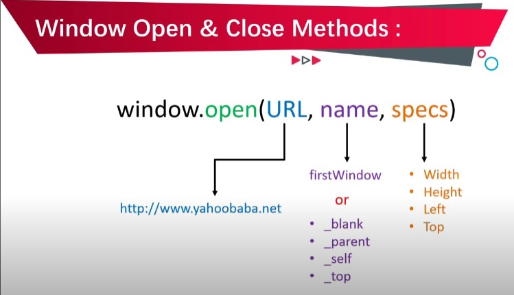

In this tutorial you will learn javascript window open and close methods tutorial in Hindi, Urdu.You can learn how to open a new window in javascript with open method and how to close a window with javascript close method in hindi.
window.open(URL,name, specs)
